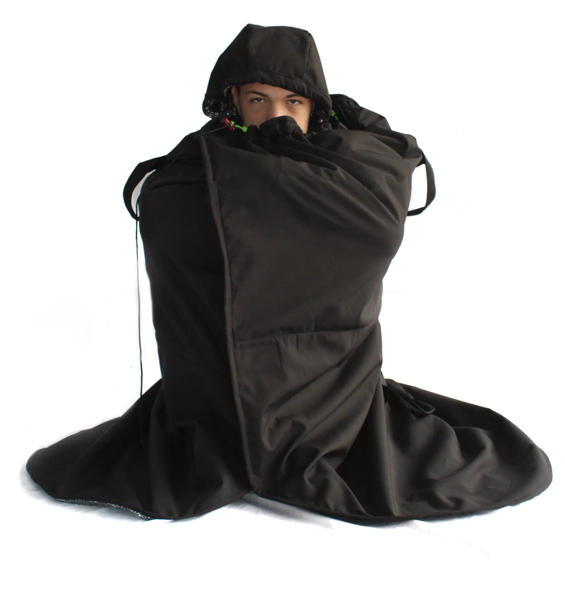
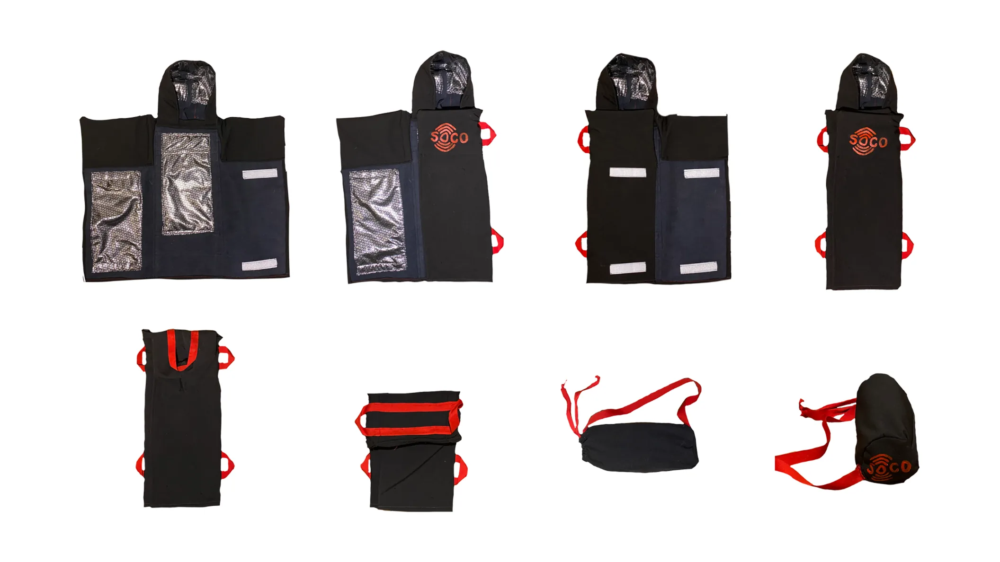

Soco
An emergency thermal blanket for people experiencing homelessness.
( Year )
2023
( Context )
Taller III, Diseño UC
( Team )
3 designers
( My role )
Horizontal teamwork across every stage of the project
( Outcome )
Highest grade in Taller III
( 07.2 Challenge and proposal )
Shelter in the first minutes
In winter, people experiencing homelessness shelter under salvaged materials that wear out with rain and cold. SOCO is a compact, deployable blanket that allows intuitive first aid and stabilises a person showing early signs of hypothermia.


( Outcome )
Highest grade in Taller III
( Reflection )
We saw SOCO as one small part of a problem that returns every year and calls for a collective response.